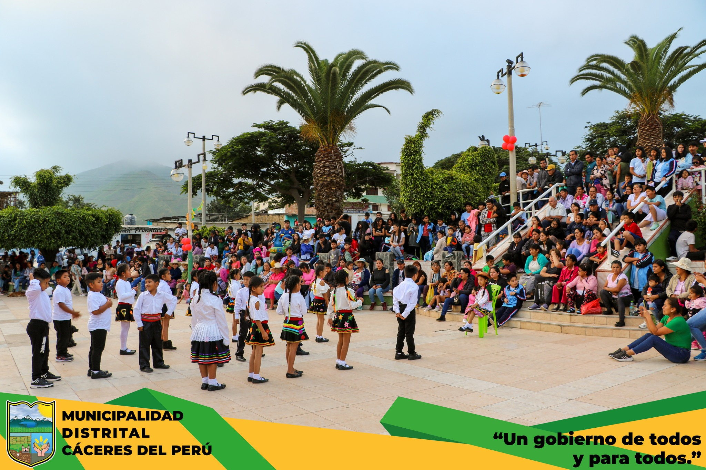

Las tradiciones transmiten la historia, los valores y las
expresiones culturales de una generación a otra.
Tradiciones
Carnavales
Los carnavales de Jimbe son una celebración popular llena de alegría, música, colores y tradición. Durante estas festividades, los habitantes se reúnen para compartir momentos de diversión, participar en actividades festivas y fortalecer los lazos de amistad y unión entre familiares y vecinos. También pueden incluir bailes, canciones, juegos con agua y reuniones comunitarias, según las costumbres de cada sector. Estas celebraciones forman parte de la identidad cultural del pueblo, porque permiten transmitir las tradiciones de generación en generación. Por ello, es importante conservar y valorar los carnavales como una expresión de la cultura y la alegría de nuestra gente..

Danzas y música
Las danzas tradicionales de Jimbe forman parte de la riqueza cultural de nuestra localidad y representan las costumbres, la historia y la identidad de sus habitantes. A través de los bailes, la música y los trajes típicos, las personas expresan su alegría y mantienen vivas las tradiciones de sus antepasados. Estas danzas pueden presentarse durante las fiestas patronales, los carnavales y otras celebraciones del pueblo, reuniendo a niños, jóvenes y adultos
Fiestas Patronales
La fiesta patronal en honor a Santa María Magdalena, patrona del pueblo de Jimbe, es una de las celebraciones religiosas más importantes de la localidad. Se celebra los días 6, 7 y 8 de diciembre, reuniendo a los habitantes, visitantes y familias que llegan para participar en las actividades festivas y religiosas. Durante estos días se realizan actos de fe, procesiones, música, danzas y reuniones comunitarias, que permiten expresar la devoción a la patrona y fortalecer la unión entre los pobladores. Esta festividad forma parte de la identidad cultural de Jimbe, porque mantiene vivas las tradiciones y promueve la solidaridad entre sus habitantes. Por ello, es importante conservar esta celebración y transmitirla a las nuevas generaciones.
Formulario de visita a Jimbe
Completa tus datos para conocer tus intereses
y planificar tu visita a nuestro pueblo.